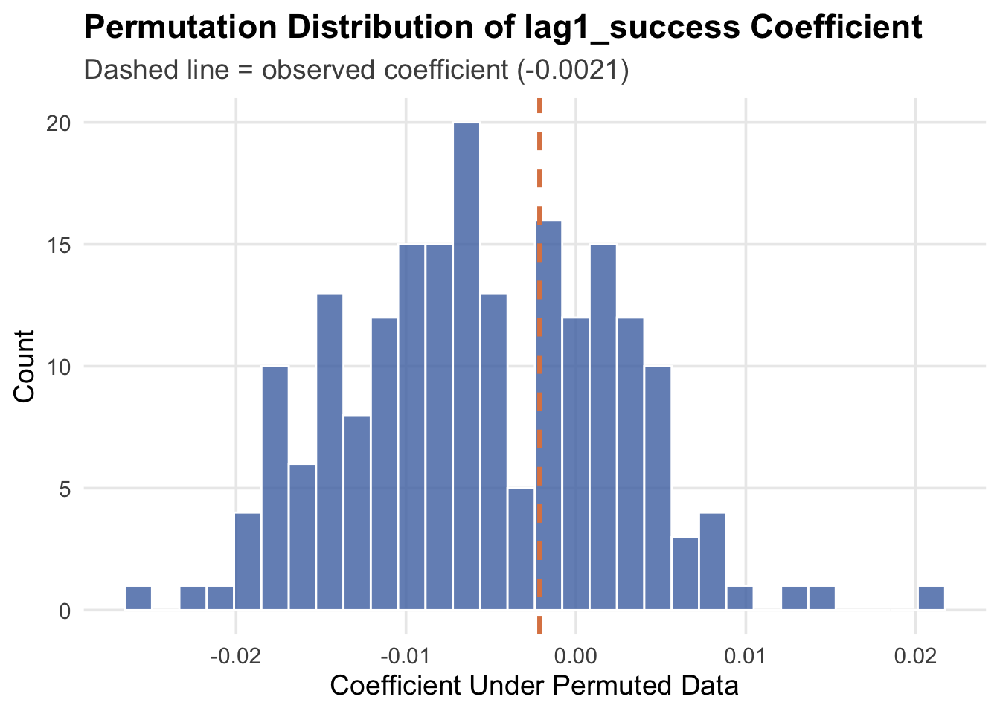

library(baseballr)
library(dplyr)
library(purrr)
library(lubridate)
library(readr)
library(tidyverse)
library(ggplot2)
if (!requireNamespace("fixest", quietly = TRUE)) {
install.packages("fixest")
}
library(fixest)
statcast_2023_2025 <- read_csv("statcast_2023_2025.csv", show_col_types = FALSE)Hot-Streak Analysis, R
Batting
Machine Learning
R
Set Up
Tidy & Prepare the Data
# Filtered to only include non-NA events, so each row is essentially a plate appearance–ending pitch
sc_results_only <- statcast_2023_2025 %>%
filter(!is.na(events))
unique(sc_results_only$events) [1] "strikeout" "field_out"
[3] "force_out" "single"
[5] "grounded_into_double_play" "walk"
[7] "double" "hit_by_pitch"
[9] "triple" "home_run"
[11] "field_error" "sac_fly"
[13] "truncated_pa" "double_play"
[15] "sac_bunt" "fielders_choice"
[17] "catcher_interf" "triple_play"
[19] "fielders_choice_out" "strikeout_double_play"
[21] "sac_bunt_double_play" "sac_fly_double_play" # This defines a simple success indicator: did the PA result in a hit? We can broaden our definition of "success" or "being hot" later.
sc_pa <- sc_results_only %>%
mutate(
success_hit = as.integer(events %in% c("single", "double", "triple", "home_run")))Order Plate Appearances and Build History per Batter-Season
sc_seq <- sc_pa %>%
arrange(
batter,
game_year,
game_date,
game_pk,
inning_topbot,
inning,
at_bat_number
) %>%
group_by(batter, game_year) %>%
mutate(
pa_index = row_number(),
# previous PA outcome (lag-1)
lag1_success = dplyr::lag(success_hit, 1),
# cumulative successes so far
cum_success = cumsum(success_hit),
# rolling success rate in previous 5 PAs (not including current one)
prev5_success_rate = if_else(
pa_index > 5,
(cum_success - dplyr::lag(cum_success, 5)) / 5,
NA_real_
)
) %>%
ungroup()
# Restrict to only batters with at least 200 PAs in the season
batters_with_n <- sc_seq %>%
group_by(batter, game_year) %>%
summarise(n_pa = n(), .groups = "drop") %>%
filter(n_pa >= 200)
sc_seq_big <- sc_seq %>%
semi_join(batters_with_n, by = c("batter", "game_year"))Basic “Hot vs Cold” Descriptive Check
# Here I'm simply comparing P(success | last PA was a success) vs P(success | last PA was a failure).
lag_summary <- sc_seq_big %>%
filter(!is.na(lag1_success)) %>%
group_by(lag1_success) %>%
summarise(
n = n(),
p_success = mean(success_hit),
.groups = "drop"
)
lag_summaryNow, Basic Check At the Batter Level
lag_by_batter <- sc_seq_big %>%
filter(!is.na(lag1_success)) %>%
group_by(batter, game_year, lag1_success) %>%
summarise(
n = n(),
p_success = mean(success_hit),
.groups = "drop"
) %>%
pivot_wider(
names_from = lag1_success,
values_from = c(n, p_success),
names_prefix = "lag1_"
) %>%
mutate(
diff_p_success = p_success_lag1_1 - p_success_lag1_0
)
head(lag_by_batter)summary(lag_by_batter$diff_p_success) Min. 1st Qu. Median Mean 3rd Qu. Max.
-0.177519 -0.039297 -0.003012 -0.002775 0.030555 0.166064 Logistic Regression With Batter Fixed Effects (hot-hand test)
hot_data <- sc_seq_big %>%
filter(!is.na(lag1_success))
# Batter fixed effects via factor(batter)
hot_glm <- glm(
success_hit ~ lag1_success + factor(batter),
data = hot_data,
family = binomial()
)
summary(hot_glm)$coefficients["lag1_success", ] Estimate Std. Error z value Pr(>|z|)
-0.002140384 0.008427836 -0.253966044 0.799521791 Interpretation: This statistical test is the same core idea as the classic hot-hand study from the Gilovich, Vallone & Tversky. It asks: Does the outcome of the previous plate appearance increase the odds of a positive outcome on the next PA? My estimate is basically zero (–0.002 ≈ 0), statistically insignificant (p = 0.80), and in the wrong direction (slightly negative). So to conclude, under this model, no evidence of a hot hand exists. These results are exactly in line with the original “hot hand fallacy” literature.
Incorporating “streakiness” (last 5 PA performance)
rolling_data <- sc_seq_big %>%
filter(!is.na(prev5_success_rate))
hot_glm_rolling <- glm(
success_hit ~ prev5_success_rate + factor(batter),
data = rolling_data,
family = binomial()
)
summary(hot_glm_rolling)$coefficients["prev5_success_rate", ] Estimate Std. Error z value Pr(>|z|)
6.3600261 0.0240932 263.9760258 0.0000000 Interpretation: A coefficient this large and significant says that recent performance over the last 5 PA is an extremely strong predictor of the next PA result. I’m quite wary of these results, though. “Last 5 PA performance” is not a proper hot-hand variable, it is likely confounded with many variables, especially batter & pitcher talent (sure, a hitter who’s 5-for-his-last-5 is more likely to get a hit than a hitter who’s 0-for-his-last-5, but that’s probably because the 5-5 hitter is simply better than the 0-5 hitter, not because he’s hot.) This is the exact reason why most hot-hand literature I’ve read emphasizes within-player randomization, permutation tests, and fixed effects.
Permutation test for the hot-hand
# The classic critique is that even with IID outcomes, you still see apparent streaks. Here, I simulate this by shuffling success sequences within batter-season, preserving each batter’s total number of hits but destroying true temporal streaks.
# Preprocess once: ordering + keep only needed columns
# Keep just what the permutation test needs to minimize memory usage
sc_seq_small <- sc_seq_big %>%
select(
batter, game_year,
game_date, game_pk,
inning_topbot, inning,
at_bat_number,
success_hit)
# Create a stable PA index once, so we can reuse it in permutations
sc_seq_prepped <- sc_seq_small %>%
arrange(
batter, game_year,
game_date, game_pk,
inning_topbot, inning,
at_bat_number
) %>%
group_by(batter, game_year) %>%
mutate(pa_index = row_number()) %>%
ungroup()
# Helper function: fit logit with batter fixed effects and return lag1 coef
get_lag1_coef <- function(df) {
df2 <- df %>%
arrange(batter, game_year, pa_index) %>% # ensure consistent order
group_by(batter, game_year) %>%
mutate(
lag1_success = dplyr::lag(success_hit, 1)
) %>%
ungroup() %>%
filter(!is.na(lag1_success)) %>%
select(success_hit, lag1_success, batter) # drop everything else
# Logistic regression with batter fixed effects (memory efficient)
m <- fixest::feglm(
success_hit ~ lag1_success | batter,
data = df2,
family = "binomial"
)
# Extract coefficient on lag1_success
coef(m)[["lag1_success"]]
}
# Observed coefficient (real data)
set.seed(123)
obs_coef <- get_lag1_coef(sc_seq_prepped)
obs_coef[1] -0.002140384# Permutation test
n_perm <- 200
perm_coefs <- vapply(
X = seq_len(n_perm),
FUN.VALUE = numeric(1),
FUN = function(i) {
# Permute success within batter-year, preserving each player's
# number of successes and PAs in that year, but destroying order
perm_df <- sc_seq_prepped %>%
group_by(batter, game_year) %>%
mutate(success_hit = sample(success_hit)) %>%
ungroup()
get_lag1_coef(perm_df)
}
)
# Compare observed to permutation distribution
# One-sided p-value (to specifically test for a *positive* hot hand)
p_one_sided <- mean(perm_coefs >= obs_coef)
# Two-sided p-value (any departure from 0)
p_two_sided <- mean(abs(perm_coefs) >= abs(obs_coef))
p_one_sided[1] 0.375p_two_sided[1] 0.8# Visualization!
tibble(perm_coef = perm_coefs) %>%
ggplot(aes(x = perm_coef)) +
geom_histogram(
bins = 30,
fill = "#4C72B0", # nice blue
color = "white",
alpha = 0.8) +
geom_vline(
xintercept = obs_coef,
color = "#DD8452", # contrasting orange
size = 1.1,
linetype = "dashed") +
labs(
title = "Permutation Distribution of lag1_success Coefficient",
subtitle = paste0("Dashed line = observed coefficient (", round(obs_coef, 4), ")"),
x = "Coefficient Under Permuted Data",
y = "Count") +
theme_minimal(base_size = 14) +
theme(
plot.title = element_text(face = "bold"),
plot.subtitle = element_text(color = "gray30"),
panel.grid.minor = element_blank())Warning: Using `size` aesthetic for lines was deprecated in ggplot2 3.4.0.
ℹ Please use `linewidth` instead.
Interpretation: To more holistically assess whether a hitter’s success in the previous plate appearance predicts success in the next one, I ran a permutation test using 200 within-player, within-season random shuffles of the success_hit sequence. The observed lag-1 coefficient from the logistic regression with batter fixed effects was –0.0021, essentially zero. The permutation distribution centered tightly around zero, and 37.5% of the permuted coefficients were greater than the observed value, while 80% were more extreme in absolute value. This indicates that the observed effect falls well within what would be expected by random chance. Overall, the permutation test provides no evidence of a hot-hand effect in MLB hit outcomes.
Conclusion:
Across all three approaches, there is no evidence of a hot-hand effect in MLB hitting. The logistic regression with batter fixed effects shows that a hitter’s previous plate appearance has essentially zero predictive value for the next one (β = –0.0021, p = 0.80). The permutation test confirms this: the observed coefficient falls squarely inside the null distribution generated by random shuffles, yielding a two-sided p ≈ 0.80. Although the “last-5 PA streakiness” model produces a large positive coefficient, this reflects mechanical autocorrelation introduced by using a rolling average of the outcome variable—not genuine predictive power about future success. Taken together, these results indicate that MLB hitters do not show measurable short-term hot-hand effects once you control for player ability and appropriate statistical dependencies.